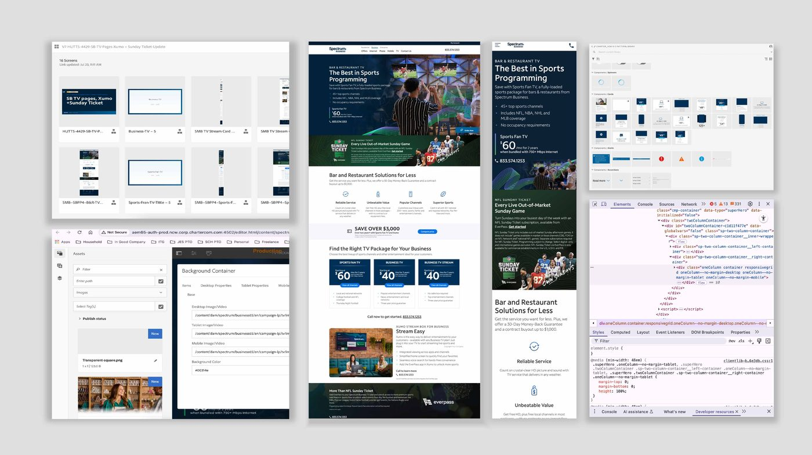
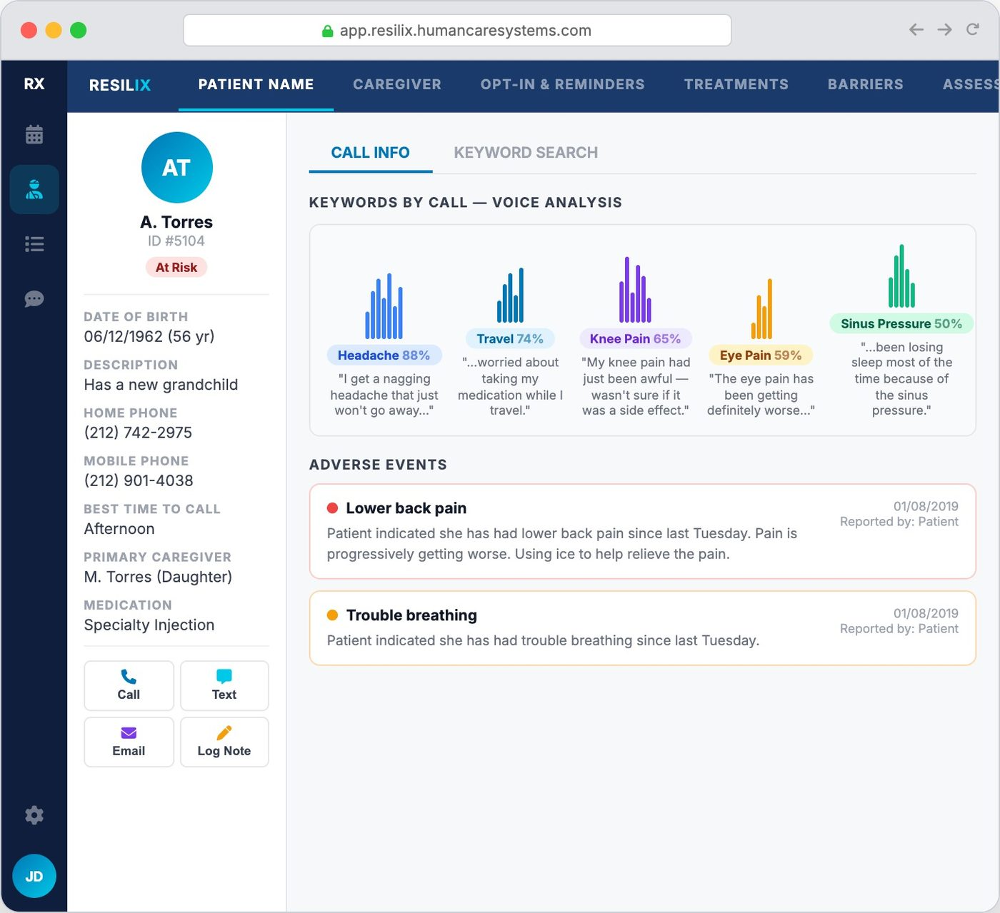
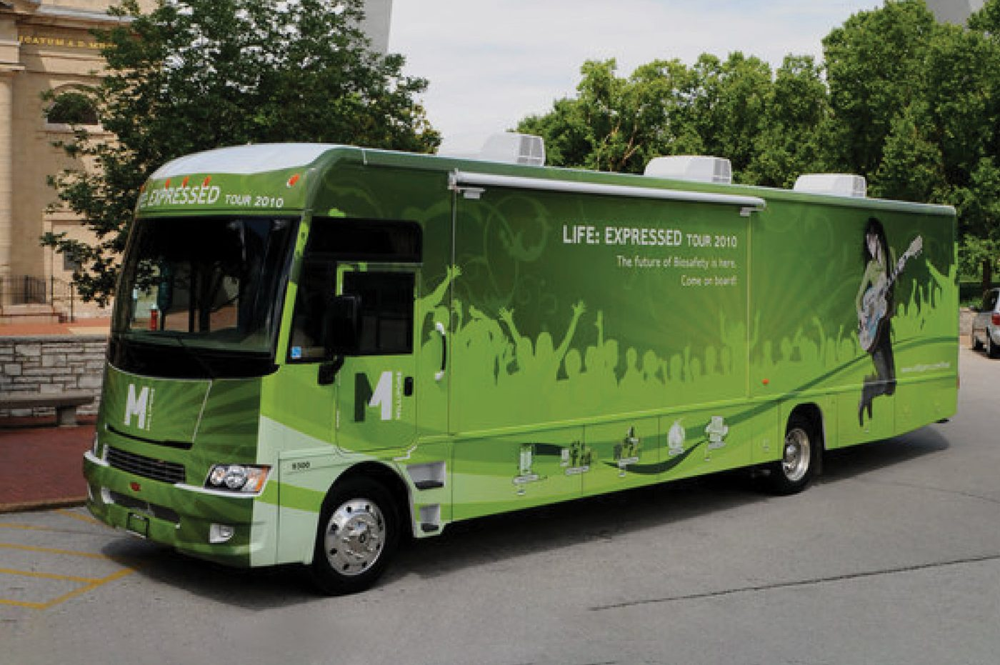
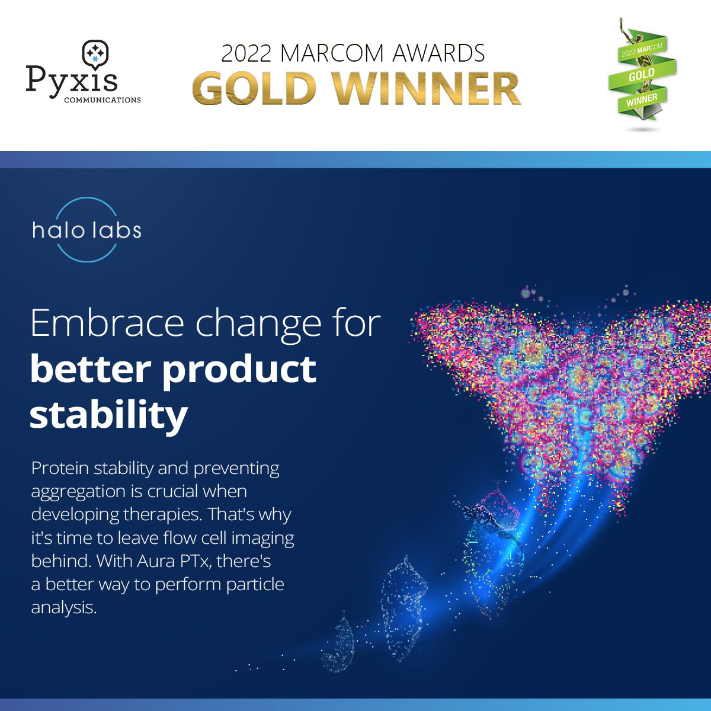
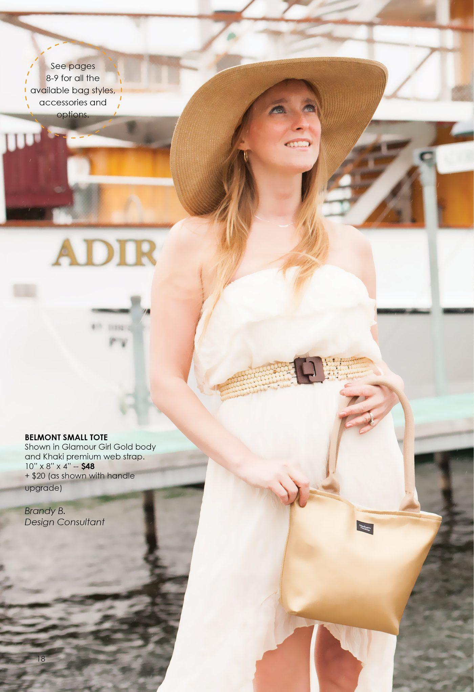
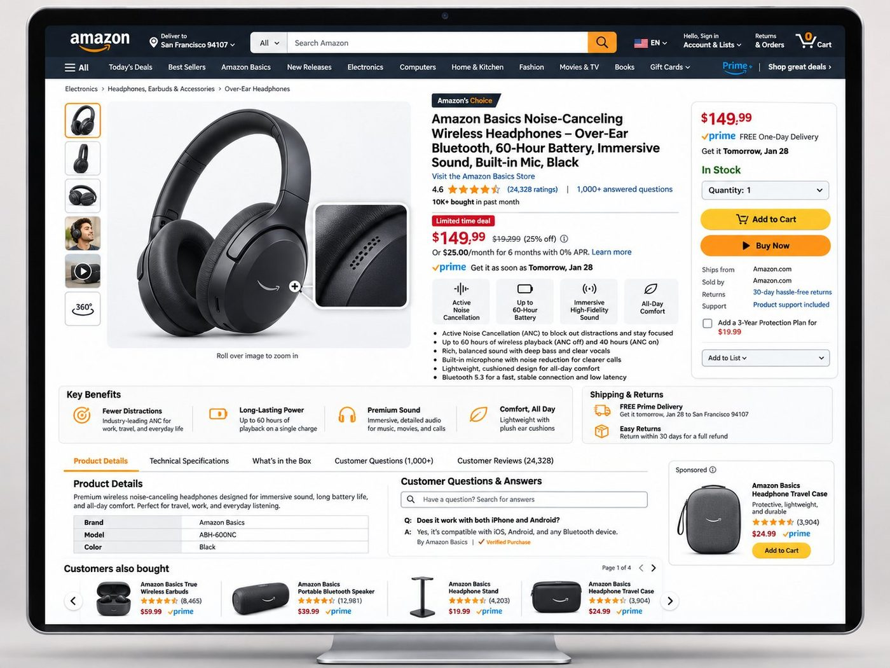
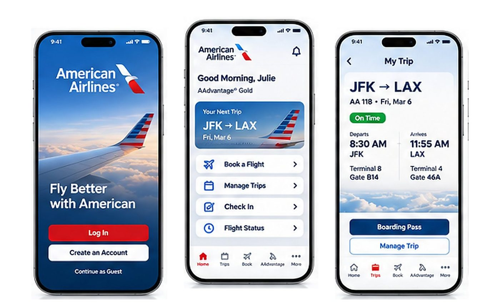
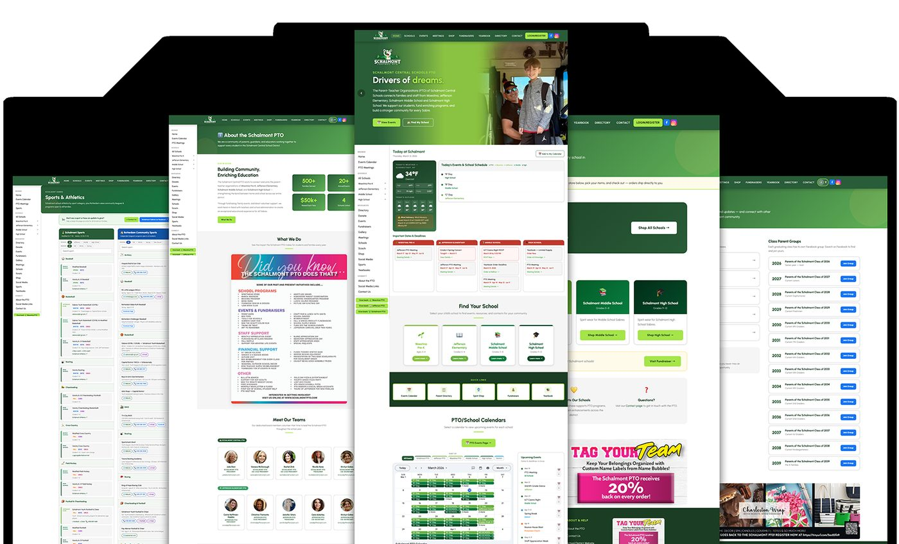
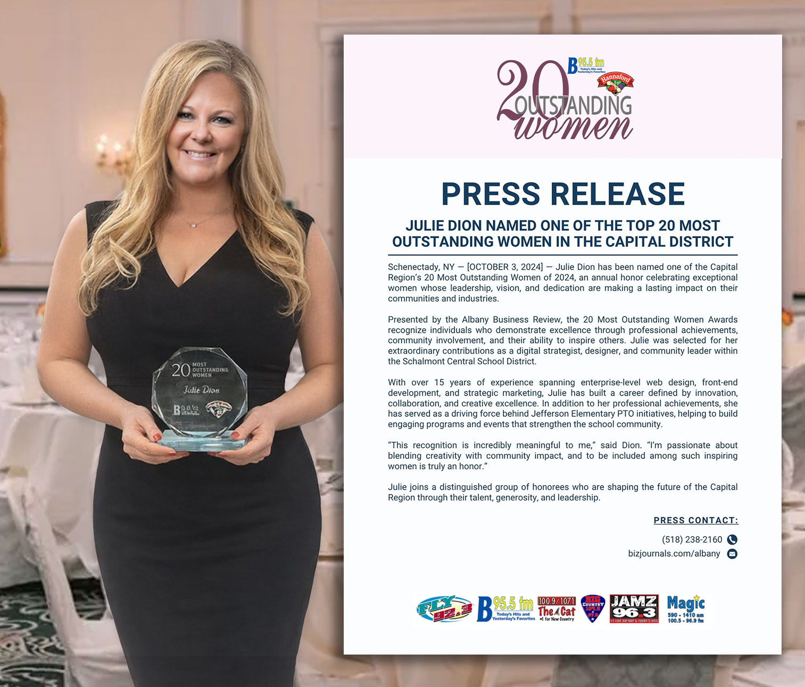

Julie Dion · Senior UX/UI Developer
Designing digital experiences from strategy to delivery.
I'm Julie, a senior UX/UI developer. For 20+ years I've built design systems and web experiences for brands like Microsoft, Merck, Charter Spectrum, and American Airlines.


Selected work
Six projects, from enterprise web to 0-to-1 product
Senior UI Designer · 18% lift in bundle conversions
Redesigning Spectrum Business: a 15+ page web experience for millions of users

Creative Director & UX Designer · $1.26M in sales generated
0-to-1 design of an award-winning telenursing platform

Senior UI Designer · Motion campaigns for enterprise buyers
Dynamics 365 motion and video campaigns for enterprise buyers
Art Director & Senior Designer · $2.4M campaign budget managed
Five years of award-winning campaigns for a global life sciences leader

Freelance Art Director · 2022 MarCom Gold award
Science campaigns and digital ads, including MarCom Gold-winning work for Halo Labs

Marketing & Creative Director · Online builder for 200+ design consultants
A full brand relaunch, an online bag builder, and seasonal catalogs

More work

Product pages for Amazon Basics electronics and home

The American Airlines mobile app, from check-in to boarding
One connected experience across web, mobile, and operations
Web, digital, and brand work for Charter, ShareBuilder 401k, Newpoint, and Microsoft

A community platform and full event design suite for the Schalmont PTO
About
Hi. I'm Julie Dion.
I'm a senior UX/UI developer, rooted in print and digital design. I pair visual judgment with hands-on front-end code, and I work closely with product managers, engineers, and stakeholders to move work from concept to launch. I can help you with:
- Design systems
- UX/UI design
- Front-end development
- AEM authoring
- Prototyping in Figma
- User research & A/B testing
- Accessibility (WCAG)
- AI-assisted workflows
See my work, or download my resume.
Kind words
From managers & peers
Recognition
20 Most Outstanding Women of the Capital Region
Named one of the Capital Region's 20 Most Outstanding Women of 2024, recognized for leadership, creativity, and community impact.

Let's work together
Start a conversation
Have a role or project in mind? I'd love to hear about it.
- Emailjuliedion1@gmail.com
- Phone(518) 892-7495
- LocationCapital Region, NY · available remotely
- LinkedInlinkedin.com/in/julie-aileen-dion